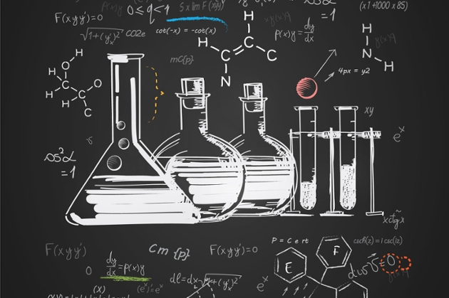

Chemistry is a branch of physical science that studies the composition, structure, properties and change of matter. Chemistry includes topics such as the properties of individual atoms, how atoms form chemical bonds to create chemical compounds, the interactions of substances through intermolecular forces that give matter its general properties, and the interactions between substances through chemical reactions to form different substances.
Chemistry is sometimes called the central science because it bridges other natural sciences, including physics, geology and biology. For the differences between chemistry and physics see comparison of chemistry and physics.
The history of chemistry can be traced to alchemy, which had been practiced for several millennia in various parts of the world.
Early civilizations, such as the Egyptians Babylonians, Indians amassed practical knowledge concerning the arts of metallurgy, pottery and dyes, but didn't develop a systematic theory.
A basic chemical hypothesis first emerged in Classical Greece with the theory of four elements as propounded definitively by Aristotle stating that fire, air, earth and water were the fundamental elements from which everything is formed as a combination. Greek atomism dates back to 440 BC, arising in works by philosophers such as Democritus and Epicurus. In 50 BC, the Roman philosopher Lucretius expanded upon the theory in his book De rerum natura (On The Nature of Things). Unlike modern concepts of science, Greek atomism was purely philosophical in nature, with little concern for empirical observations and no concern for chemical experiments.
In the Hellenistic world the art of alchemy first proliferated, mingling magic and occultism into the study of natural substances with the ultimate goal of transmuting elements into gold and discovering the elixir of eternal life. Work, particularly the development of distillation, continued in the early Byzantine period with the most famous practitioner being the 4th century Greek-Egyptian Zosimos of Panopolis. Alchemy continued to be developed and practised throughout the Arab world after the Muslim conquests, and from there, and from the Byzantine remnants, diffused into medieval and Renaissance Europe through Latin translations. Some influential Muslim chemists, Abū al-Rayhān al-Bīrūnī, Avicenna and Al-Kindi refuted the theories of alchemy, particularly the theory of the transmutation of metals; and al-Tusi described a version of the conservation of mass, noting that a body of matter is able to change but is not able to disappear.
Source: wikipedia.org/Chemistry